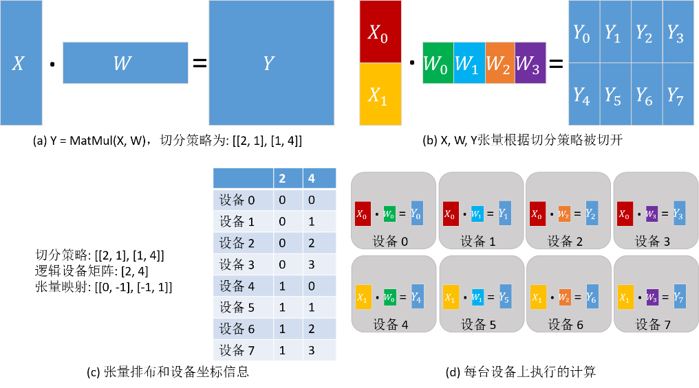

自动并行
自动并行模式让用户无需关心策略配置，自动地建立代价模型，找到训练时间较短的并行策略。当前MindSpore支持如下三种不同的自动并行方案：
切分策略传播算法：由配置并行策略的算子向未配置的算子传播并行策略。在传播时，算法会尽量选取引发张量重排布通信最少的策略。
双递归策略搜索算法：其基于符号运算的代价模型可以自由适配不同的加速器集群，对于巨大网络以及大规模多卡切分能够保证瞬间生成最优策略。
动态规划策略搜索算法：能够搜索出代价模型刻画的最优策略，但在搜索巨大网络模型的并行策略时耗时较长，该算法目前已不再维护。
自动并行算法是基于算子级模型并行的策略搜索算法，要了解其原理，首先需要了解MindSpore算子级并行中的基本概念：分布式算子、张量排布和张量重排布。算子级并行属于“单程序多数据”（Single Program Multiple Data，SPMD）的一种实现。同一段程序执行在不同数据分片上。MindSpore将单机版本的程序转换成并行版本的程序。该转换是细粒度的，会将单机版本程序中每个算子替换成分布式算子，同时保证替换是数学等价的。
分布式算子
分布式算子：运行在多设备上的分布式算子保证了与单机版本算子计算语义等价性。也就是：给定相同输入，分布式算子与单机版本算子总是得到相同的输出。
考虑矩阵乘算子（MatMul），其输入是两个矩阵X和W，Y = MatMul(X, W)。将此算子切到4台设备上并行执行。如果矩阵X在4台设备上都有副本，而W按列切分4份，每台设备有一份，那么单机版本MatMul算子对应的分布式算子同样是MatMul；即每台设备上都将执行MatMul算子。如果将X按照列切分4份，W按行切4份，每台机器各得到X和W的一个分片，那么单机版本MatMul算子对应的分布式算子是MatMul->AllReduce；即每台设备上都将顺序执行MatMul和AllReduce两个算子，才能保证数学等价性。
除了“单程序”（Single Program，SP）外，“多数据”（Multiple Data，MD）也需要指定，也就是哪台设备得到数据的哪个切片。为此，我们先定义切分策略（Sharding Strategy）。
切分策略
切分策略：算子的切分策略是一个二维数组，表示该算子的每个输入张量中的每个维度的切片数量。这里的切分都是均匀切分。
由切分策略，可以推导出 张量排布 ，用以描述张量是如何分布在各个设备上的。
张量排布
张量排布：给定一个算子的切分策略，能够推导出该算子的输入和输出张量的 张量排布 ；张量排布是由 逻辑设备矩阵 和 张量映射 构成的。逻辑设备矩阵是该算子的输入和输出张量共用的，为一维数组，表示设备是如何组织的。张量映射是二维数组，表示张量的某一维切分到逻辑设备矩阵的某一维。
同样考虑矩阵乘算子（MatMul），其输入是两个矩阵X和W：Y = MatMul(X, W)。给算子配置切分策略为[[2, 1], [1, 4]]，因此而得到的张量排布和每台设备上执行的计算如下图所示。X沿行均匀切分为2份，W沿列均匀切分为4份（如下图(b)）。根据切分策略，推导出逻辑设备矩阵和张量映射，如下图(c)所示。各个设备的坐标因此也确定下来了，描述了其在逻辑设备矩阵中的位置。张量在各个设备中的分布由设备的坐标决定。由下图(c)中表的‘2’列得出：设备0—设备3得到X<sub>0</sub>分片，设备4—设备7得到X<sub>1</sub>分片。由下图(c)中表的‘4’列得出：设备0和设备4得到W<sub>0</sub>分片，设备1和设备5得到W<sub>1</sub>分片，设备2和设备6得到W<sub>2</sub>分片，设备3和设备7得到W<sub>3</sub>分片。因此，各台设备上的计算也确定下来了，如下图(d)所示。
对于有数据依赖的两个算子（即一个算子的输出张量被第二个算子使用），两个算子对于该数据依赖张量定义的张量排布可能不同（由于逻辑设备矩阵不同或张量映射不同），因此提出了 张量重排布 ，用以转换不一致的排布。这里给出张量重排布的定义，省略了具体算法。
张量重排布
张量重排布：给定同一张量的两个不一致的张量排布，张量重排布能够将源排布转换到目的排布，同时保证转换产生的通信代价最小。
这里的通信代价指的是每台设备通信的数据量。
考虑两个矩阵乘算子的例子：Z = MatMul(X, W), O = MatMul(Z, Y)。为了使得张量重排布起作用，两个矩阵乘算子配置了不同的切分策略，使得张量Z的排布不一致。在下图(a)中，第一个矩阵乘算子的输出张量Z是按行切分的，然而第二个矩阵乘算子要求张量Z是完整的，因此张量重排布推导出这里需要插入AllGather算子完成转换[1]。在下图(b)中，第一个矩阵乘算子的输出张量Z是按行切分的，然而第二个矩阵乘算子要求张量Z是按列切分的，故张量重排布推导出这里需要插入AllToAll算子完成转换。

[1]：注：实际上需要插入AllGather算子和Concat算子。